Appearance spacing
The owner, 2026-10-17: "it just feels a bit messy. spacing is off ... between the sections. i like the individual pieces ... just giving things room to breathe."
Every shot is the real page (scene wardrobe) with the variant's CSS injected for the shot only; no game CSS has changed.
Each picture is the sheet cropped at 1:1; the link under it is the whole window.
What is wrong today
Measured off the page (1280x800 and 1920x1080 give the same sheet: 602x702 outer, 552px content). Tokens: --gap-s 4, --gap-m 8, --pad-l 14/24.
| gap | px | from |
|---|---|---|
| sheet padding | 14 top/bottom, 24 sides | --pad-l |
| heading → switch | 8 | .held gap, --gap-m |
| switch → name row | 8 | .wardrobe gap, --gap-m |
| name row → title row | 8 | .wardfields gap, --gap-m |
| title row → slots/close-up | 8 | .wardrobe gap |
| slots: row gap / slot → close-up | 8 / 8 | .wardstage gap, --gap-m |
| close-up | 192x180, centered in the 192 left between the slots (0 spare) | sizeBig |
| slots → grid tab | 8 | .wardrobe gap |
| grid tab → grid box | 0 (the tab sits on the box) | by design |
| grid box padding | 4; tiles inset 4 left, 14 right (scrollbar) | --gap-s |
| tile gaps | 4 x 4 (tiles 103x146) | --gap-s |
| grid → randomize/clear | 8 | .wardrobe gap |
| randomize ↔ clear | 8 | .pair, --gap-m |
| randomize/clear → back | 8 | .held gap |
| name/title label column | 5em (60) + 8 | hand-set 5em |
- One gap everywhere, so no grouping. Every vertical gap on the page is 8px: between the name and the title row (one thing) and between the title row and the slots (two different things) alike. Nothing says where a section ends, which is what reads as "messy".
- The buttons are three sections' worth of 8. Randomize/clear sit 8 under the grid and the back 8 under them; the foot reads as part of the grid.
- The name and title rows are on different columns. Name is
5em 1fr auto auto, title5em auto 1fr auto auto: the field ends 26px short of the title row's>, the count floats between them. - The grid's gutters are uneven. 4px of padding on the left, 4 + the scrollbar (~10) on the right, so the five tiles sit off-center in the box.
- The sheet's edge is thinner top and bottom (14) than at the sides (24), and the heading has only 8 under it.
- Hand-set px inside the pieces (2px 8px on the switch and arrows, 3px 10px 2px on the tab, 3px 4px on slots) are the pieces' own and stay; the section spacing is all tokens, just one token.
- The budget: today the grid shows 1.66 rows; its floor is
WARD_GRID_ROWS= 1.5, about 24px. Any variant spends that or grows the sheet.
The variants
- A, consistent rhythm: 12px between every section (heading, switch, name+title, outfit, grid, buttons), 4px inside one; the two rows on one set of columns; the grid's scrollbar room on both sides. Grid 1.58 rows.
- B, grouped: four groups (who, outfit, grid, buttons), 4px inside, 17px between with a grey hairline halfway; heading 8 over the switch; A's column and gutter fixes. Grid 1.56 rows.
- C, airy: B plus a 20/32px sheet edge and 8px grid padding and tile gaps. Something gives: the sheet's size is its content box, so the padding grows it to 618x714 (from 602x702), which still fits a 1280x800 window (room to 796). Held to 702 instead, the grid would fall under 1.5 rows and the sheet scroll ~12px. Grid 1.54 rows.
1280x800, light
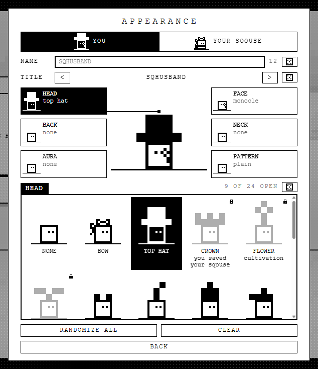

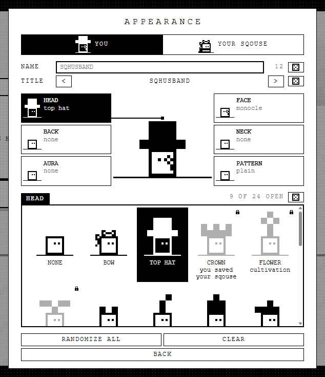

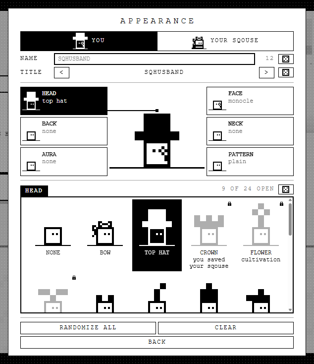

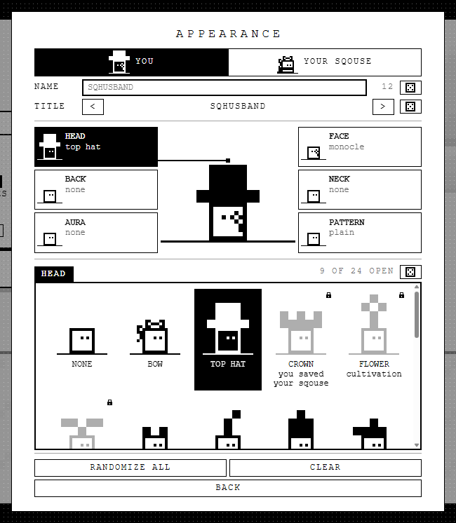

1280x800, dark
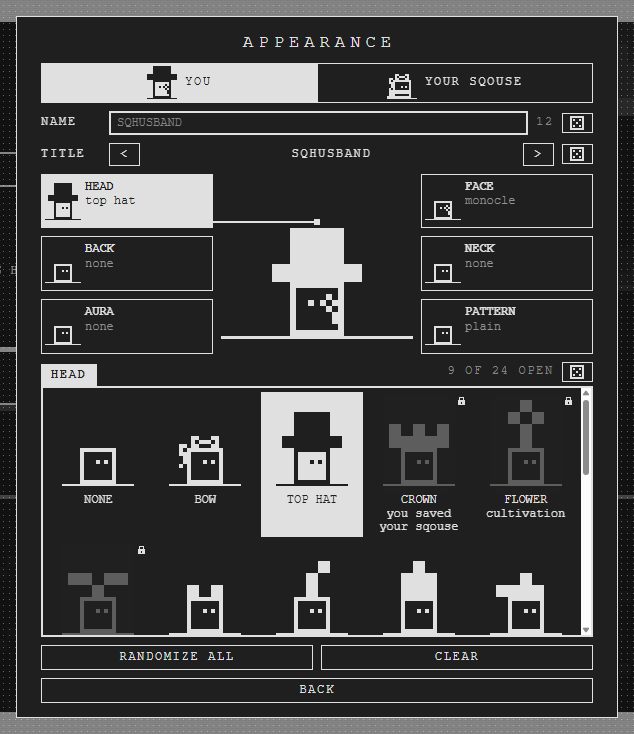

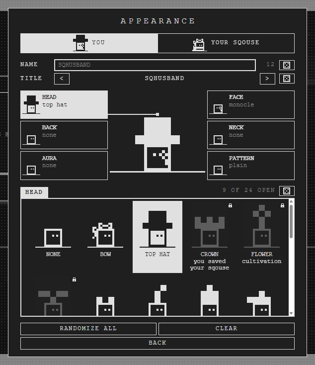

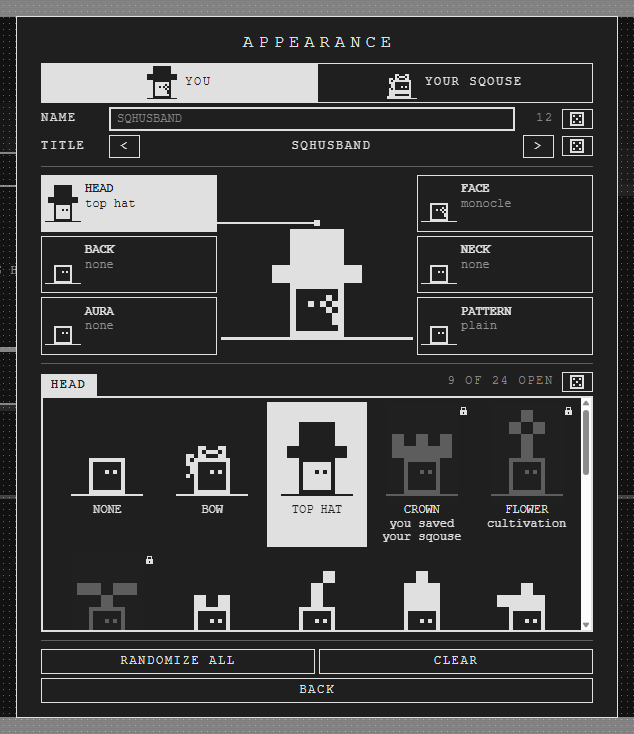

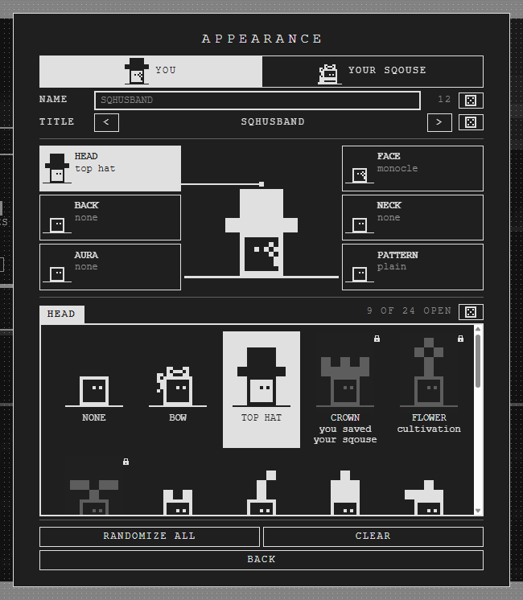

1920x1080, light
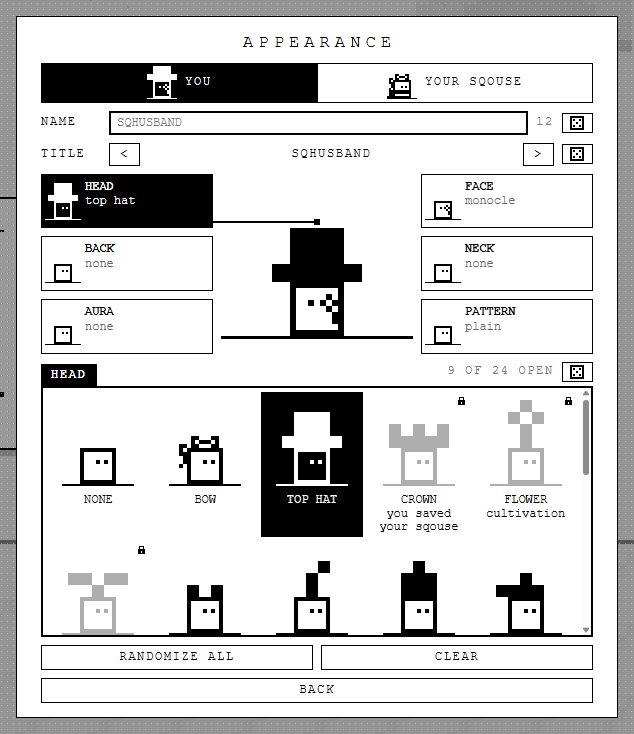

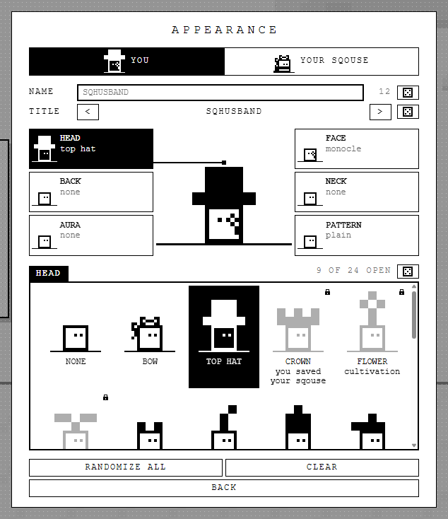

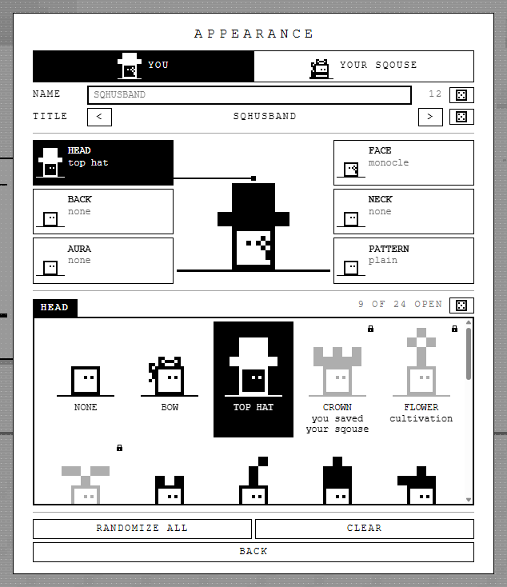

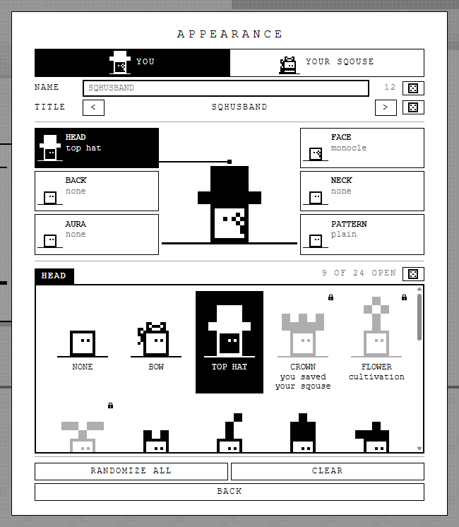

1920x1080, dark


The exact changes (the build is a copy)
Each is the whole override file beside this page; built, it goes into src/style.css's picker block, the token in :root next to --gap-s/--gap-m, and the row columns inside @media (min-width: 561px) so the phone rows keep theirs.
A (a-rhythm.css): new --gap-l: 12px; ward sheet gap --gap-m → --gap-s with #wardhead padding-bottom calc(--gap-l - --gap-s); .wardrobe gap → --gap-l; .wardfields, .wardstage, .wardfoot gap → --gap-s; both rows 5em 2.6em 1fr 2.6em 2.6em (input 2/4, count 4, die 5); .wardgrids scrollbar-gutter: stable both-edges.
B (b-grouped.css): new --gap-l: 16px, --ward-rule: 1px solid var(--ink-7); ward sheet gap → --gap-s, #wardhead padding-bottom calc(--gap-m - --gap-s); .wardrobe, .wardfields, .wardstage, .wardfoot gap → --gap-s; .wardfields/.wardstage/.wardbox padding-bottom calc(--gap-l / 2) + border-bottom --ward-rule; .wardstage/.wardbox/.wardfoot padding-top calc(--gap-l / 2 - --gap-s); A's rows and gutter. Padding and borders, never margins: fitGrid's stacked sums boxes and row gaps, and a margin would be missing from --ward-min.
C (c-airy.css): B, plus ward sheet padding 20px 32px (from --pad-l 14/24), .wardgrids padding --gap-s → --gap-m, .wardtiles gap --gap-s → --gap-m. The ward sheet's max-height calc subtracts --pad-l-y; built, it should subtract the 20px it now has.
What this cannot show
One state: you, the head slot, nobody's long name. A Steam pad's name button (.wardask) would need its own column in A–C's row grid. The phone layout is untouched by all three. The new-yard steps (wardrobe-offer) are not shot.
Reshoot: GAME=http://localhost:<port>/ node docs/mocks/appearance-spacing-2026-10-17/shoot.mjs (--measure prints the gaps).